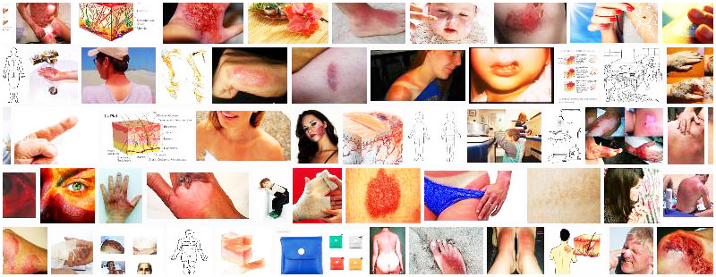
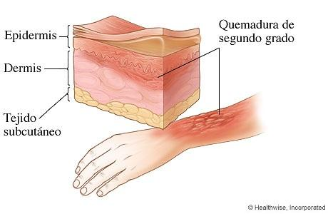
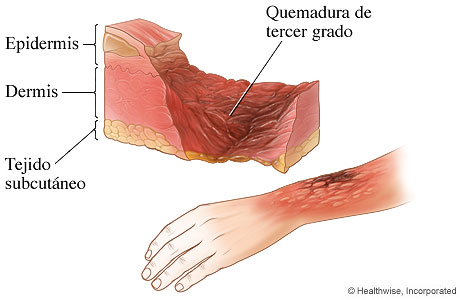

Una quemadura es una lesión en tejidos vivos causada por la acción de diversos agentes, se manifiestan desde un enrojecimiento hasta la destrucción total de las estructuras afectadas, siendo la piel, el órgano que con más frecuencia sufre este tipo de lesiones, que resulta de la exposición a llamas o líquidos calientes, contacto con objetos calientes, con cáusticos, químicos o radiación, efecto de la corriente eléctrica o de noxas biológicas.
Clasificacion de las Quemadurass
Las Quemaduras pueden clasificarse por su nivel de grado que son: de primer grado, de segundo grado, y de tercer grado.

Son aquellas que afectan solo la capa externa de la piel. Causan dolor, enrojecimiento e hinchazón, debido a contactos ligeros con objetos caliente.

Las quemaduras de segundo grado afectan ambas capas, la capa externa y la capa subyacente de la piel. Causan dolor, enrojecimiento, hinchazón y ampollas. También se llaman quemaduras de espesor parcial.

Las quemaduras de tercer grado afectan las capas profundas de la piel, y también se llaman quemaduras de espesor total. Causan piel blanquecina, oscura o quemada. La piel puede estar adormecida, se debe a las llamas o contacto con la electricidad, mucho depende del tiempo en el que se expone.